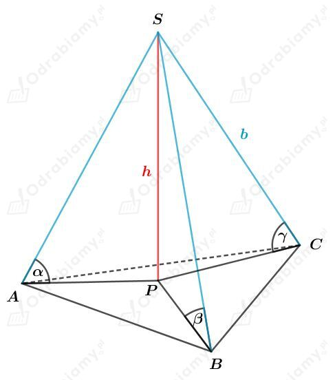

| Ostrosłup nazywamy prostym, jeśli wszystkie jego krawędzie boczne mają tę samą długość. |
Uzasadnimy, że w ostrosłupie prostym spodek wysokości jest środkiem okręgu opisanego na podstawie tego ostrosłupa.
Należy zatem pokazać, że wszystkie wierzchołki podstawy leżą w takiej samej odległości od spodka wysokości.
Dla ostrosłupa trójkątnego otrzymujemy:

Zauważmy, że
Wobec tego otrzymujemy, że
Jeśli kąty te są równej miary, to z twierdzenia Pitagorasa mamy
Zatem wierzchołki podstawy leżą w takiej samej odległości od spodka wysokości.
Zatem spodek wysokości jest środkiem okręgu opisanego na tej podstawie.
Możemy zauważyć, że dla ostrosłupa czworokątnego otrzymamy analogiczne zależności:
Wobec tego otrzymujemy, że
Zatem wierzchołki podstawy leżą w takiej samej odległości od spodka wysokości.
Zatem spodek wysokości jest środkiem okręgu opisanego na tej podstawie.
Analogicznie będzie dla ostrosłupa pięciokątnego, sześciokątnego, itd.
| Ostrosłup nazywamy prostym, jeśli wszystkie jego krawędzie boczne mają tę samą długość. |
| Pole powierzchni całkowitej ostrosłupa jest równe sumie pola powierzchni jego podstawy i pola powierzchni bocznej. |
a)
Obliczmy długość wysokości h ściany bocznej. Z twierdzenia Pitagorasa mamy:
Z siatki tej nie można złożyć ostrosłupa (długości wysokości ścian bocznych są krótsze od połowy długości podstawy).
b)
Obliczmy długość wysokości h ściany bocznej. Z twierdzenia Pitagorasa mamy:
Wyznaczmy pole powierzchni całkowitej. Mamy:
c)
Rysunek ten nie przedstawia siatki ostrosłupa prostego, ponieważ krawędzie boczne tego ostrosłupa mają różne długości.